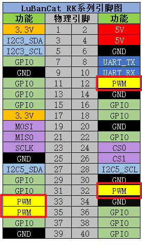
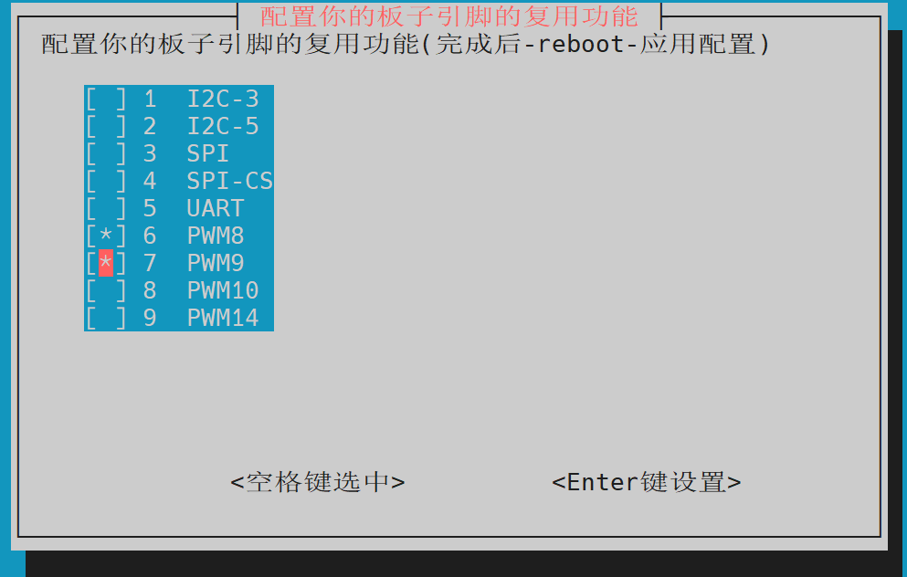
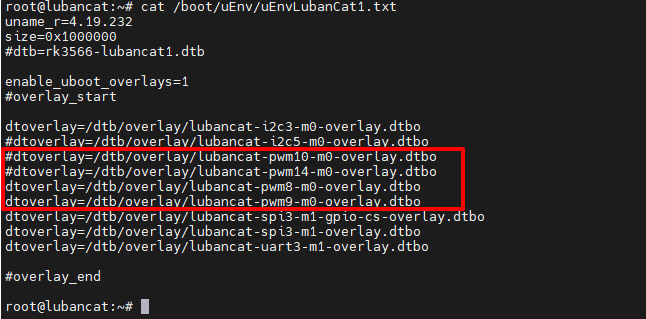
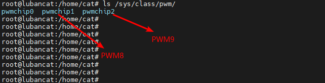

<!DOCTYPE lake>
<h1 data-lake-id="G7Nsl" id="G7Nsl"><span data-lake-id="u94bfd9bb" id="u94bfd9bb">PWM引脚</span></h1><p data-lake-id="u08b51c42" id="u08b51c42"><span class="lake-fontsize-12" data-lake-id="ud5aca58d" id="ud5aca58d" style="color: rgb(64, 64, 64); background-color: rgb(252, 252, 252)">LubanCat板卡上集成了四个具有pwm功能的GPIO</span></p><p data-lake-id="ue17d287d" id="ue17d287d"></p><p data-lake-id="u57452a0c" id="u57452a0c"><span class="lake-fontsize-12" data-lake-id="u4f76591b" id="u4f76591b" style="color: rgb(64, 64, 64); background-color: rgb(252, 252, 252)">由于LubanCat-RK系列的板子的PWM控制器会不一样，请对照下表使用</span></p><table class="lake-table" data-lake-id="NJpyL" id="NJpyL" margin="true" style="width: 500px"><colgroup><col width="100"/><col width="100"/><col width="100"/><col width="100"/><col width="100"/></colgroup><tbody><tr data-lake-id="u841016b6" id="u841016b6"><td data-lake-id="u8b8f3bbe" id="u8b8f3bbe"><p data-lake-id="u69ac4b1d" id="u69ac4b1d"><strong><span class="lake-fontsize-11" data-lake-id="ud7472260" id="ud7472260" style="color: rgb(64, 64, 64); background-color: rgb(252, 252, 252)">板卡</span></strong></p></td><td data-lake-id="ub47e4391" id="ub47e4391"><p data-lake-id="u35d3d6d6" id="u35d3d6d6"><strong><span class="lake-fontsize-11" data-lake-id="u629160a8" id="u629160a8" style="color: rgb(64, 64, 64); background-color: rgb(252, 252, 252)">Pin12</span></strong></p></td><td data-lake-id="u81e4de8a" id="u81e4de8a"><p data-lake-id="ub502f0d6" id="ub502f0d6"><strong><span class="lake-fontsize-11" data-lake-id="udaf58c0e" id="udaf58c0e" style="color: rgb(64, 64, 64); background-color: rgb(252, 252, 252)">Pin32</span></strong></p></td><td data-lake-id="u15fc504c" id="u15fc504c"><p data-lake-id="u1b27e568" id="u1b27e568"><strong><span class="lake-fontsize-11" data-lake-id="u5a2704d8" id="u5a2704d8" style="color: rgb(64, 64, 64); background-color: rgb(252, 252, 252)">Pin33</span></strong></p></td><td data-lake-id="u3a0e4538" id="u3a0e4538"><p data-lake-id="ua51849fe" id="ua51849fe"><strong><span class="lake-fontsize-11" data-lake-id="u11e0edf1" id="u11e0edf1" style="color: rgb(64, 64, 64); background-color: rgb(252, 252, 252)">Pin35</span></strong></p></td></tr><tr data-lake-id="u22145d23" id="u22145d23"><td data-lake-id="uc6862acf" id="uc6862acf" style="background-color: rgb(243, 246, 246)"><p data-lake-id="uad1f39d2" id="uad1f39d2"><span class="lake-fontsize-11" data-lake-id="uc77a8564" id="uc77a8564" style="color: rgb(64, 64, 64); background-color: rgb(252, 252, 252)">LubanCat-Zero系列</span></p></td><td data-lake-id="u76c84c4b" id="u76c84c4b" style="background-color: rgb(243, 246, 246)"><p data-lake-id="u38469f0b" id="u38469f0b"><span class="lake-fontsize-11" data-lake-id="u2be26e9a" id="u2be26e9a" style="color: rgb(64, 64, 64); background-color: rgb(252, 252, 252)">pwm3</span></p></td><td data-lake-id="u3e425851" id="u3e425851" style="background-color: rgb(243, 246, 246)"><p data-lake-id="ud3aa559f" id="ud3aa559f"><span class="lake-fontsize-11" data-lake-id="u43e3b43d" id="u43e3b43d" style="color: rgb(64, 64, 64); background-color: rgb(252, 252, 252)">pwm11</span></p></td><td data-lake-id="uc797c466" id="uc797c466" style="background-color: rgb(243, 246, 246)"><p data-lake-id="uc41487be" id="uc41487be"><span class="lake-fontsize-11" data-lake-id="u8a0f1a2e" id="u8a0f1a2e" style="color: rgb(64, 64, 64); background-color: rgb(252, 252, 252)">pwm8</span></p></td><td data-lake-id="ue9e0fd5f" id="ue9e0fd5f" style="background-color: rgb(243, 246, 246)"><p data-lake-id="u289895ae" id="u289895ae"><span class="lake-fontsize-11" data-lake-id="u89594ad6" id="u89594ad6" style="color: rgb(64, 64, 64); background-color: rgb(252, 252, 252)">pwm9</span></p></td></tr><tr data-lake-id="uee528af3" id="uee528af3"><td data-lake-id="ufb20d987" id="ufb20d987"><p data-lake-id="ucc7bda6c" id="ucc7bda6c"><span class="lake-fontsize-11" data-lake-id="u6949d351" id="u6949d351" style="color: rgb(64, 64, 64); background-color: rgb(252, 252, 252)">LubanCat-1系列</span></p></td><td data-lake-id="u5bcefe43" id="u5bcefe43"><p data-lake-id="ua757f5d9" id="ua757f5d9"><span class="lake-fontsize-11" data-lake-id="ue5d697a1" id="ue5d697a1" style="color: rgb(64, 64, 64); background-color: rgb(252, 252, 252)">pwm8</span></p></td><td data-lake-id="u7d4c7405" id="u7d4c7405"><p data-lake-id="u116f6a47" id="u116f6a47"><span class="lake-fontsize-11" data-lake-id="u771b3f15" id="u771b3f15" style="color: rgb(64, 64, 64); background-color: rgb(252, 252, 252)">pwm9</span></p></td><td data-lake-id="u8cf175b3" id="u8cf175b3"><p data-lake-id="udb6d1f70" id="udb6d1f70"><span class="lake-fontsize-11" data-lake-id="u1094cbd4" id="u1094cbd4" style="color: rgb(64, 64, 64); background-color: rgb(252, 252, 252)">pwm10</span></p></td><td data-lake-id="u23a39bf6" id="u23a39bf6"><p data-lake-id="ue7d41fd4" id="ue7d41fd4"><span class="lake-fontsize-11" data-lake-id="u40f180bc" id="u40f180bc" style="color: rgb(64, 64, 64); background-color: rgb(252, 252, 252)">pwm14</span></p></td></tr><tr data-lake-id="u739b7da2" id="u739b7da2"><td data-lake-id="u08ae22e5" id="u08ae22e5" style="background-color: rgb(243, 246, 246)"><p data-lake-id="u2420b1c5" id="u2420b1c5"><span class="lake-fontsize-11" data-lake-id="ud4745692" id="ud4745692" style="color: rgb(64, 64, 64); background-color: rgb(252, 252, 252)">LubanCat-2系列</span></p></td><td data-lake-id="uf7750154" id="uf7750154" style="background-color: rgb(243, 246, 246)"><p data-lake-id="ub0e0f44d" id="ub0e0f44d"><span class="lake-fontsize-11" data-lake-id="uf3bce42b" id="uf3bce42b" style="color: rgb(64, 64, 64); background-color: rgb(252, 252, 252)">pwm8</span></p></td><td data-lake-id="u2e702304" id="u2e702304" style="background-color: rgb(243, 246, 246)"><p data-lake-id="u022f0445" id="u022f0445"><span class="lake-fontsize-11" data-lake-id="u09018cc7" id="u09018cc7" style="color: rgb(64, 64, 64); background-color: rgb(252, 252, 252)">pwm9</span></p></td><td data-lake-id="ue2892d1e" id="ue2892d1e" style="background-color: rgb(243, 246, 246)"><p data-lake-id="u4d3ce4b4" id="u4d3ce4b4"><span class="lake-fontsize-11" data-lake-id="u9d166f0b" id="u9d166f0b" style="color: rgb(64, 64, 64); background-color: rgb(252, 252, 252)">pwm10</span></p></td><td data-lake-id="u13418756" id="u13418756" style="background-color: rgb(243, 246, 246)"><p data-lake-id="u71342088" id="u71342088"><span class="lake-fontsize-11" data-lake-id="u9b18b29e" id="u9b18b29e" style="color: rgb(64, 64, 64); background-color: rgb(252, 252, 252)">pwm14</span></p></td></tr></tbody></table><h2 data-lake-id="yJLXg" id="yJLXg"><span data-lake-id="uc5477daa" id="uc5477daa" style="color: rgb(64, 64, 64); background-color: rgb(252, 252, 252)">使能PWM接口功能</span></h2><p data-lake-id="u6f209f80" id="u6f209f80"><span class="lake-fontsize-12" data-lake-id="uda6ff24a" id="uda6ff24a" style="color: rgb(64, 64, 64); background-color: rgb(252, 252, 252)">PWM接口在默认情况是关闭状态的，需要使能才能使用, 每个板卡都具有四个硬件PWM，下面的使能操作以 </span><strong><span class="lake-fontsize-12" data-lake-id="u0ea9f6c3" id="u0ea9f6c3" style="color: rgb(64, 64, 64); background-color: rgb(252, 252, 252)">PWM8</span></strong><span class="lake-fontsize-12" data-lake-id="u6b0d32df" id="u6b0d32df" style="color: rgb(64, 64, 64); background-color: rgb(252, 252, 252)"> 和 </span><strong><span class="lake-fontsize-12" data-lake-id="u60f11ef6" id="u60f11ef6" style="color: rgb(64, 64, 64); background-color: rgb(252, 252, 252)">PWM9</span></strong><span class="lake-fontsize-12" data-lake-id="ua001049b" id="ua001049b" style="color: rgb(64, 64, 64); background-color: rgb(252, 252, 252)"> 为例</span></p><p data-lake-id="ucf768f7a" id="ucf768f7a"><strong><span class="lake-fontsize-12" data-lake-id="udd9602da" id="udd9602da" style="color: rgb(64, 64, 64); background-color: rgb(252, 252, 252)">方法一:</span></strong></p><span class="yuque-card-unsupported">[codeblock]</span><ol list="u05edde75"><li data-lake-id="u29ad7523" fid="u25aa737a" id="u29ad7523"><span class="lake-fontsize-12" data-lake-id="ue2311805" id="ue2311805" style="color: rgb(64, 64, 64); background-color: rgb(252, 252, 252)">使用方向键移动光标到</span><span class="lake-fontsize-12" data-lake-id="ua5cc946e" id="ua5cc946e" style="color: rgb(64, 64, 64); background-color: rgb(252, 252, 252)"> </span><span class="lake-fontsize-9" data-lake-id="ue9d66cc9" id="ue9d66cc9" style="color: rgb(231, 76, 60); background-color: rgb(252, 252, 252)">PWM8</span></li><li data-lake-id="ubff7b94f" fid="u25aa737a" id="ubff7b94f"><span class="lake-fontsize-12" data-lake-id="u90d30b1b" id="u90d30b1b" style="color: rgb(64, 64, 64); background-color: rgb(252, 252, 252)">按</span><span class="lake-fontsize-12" data-lake-id="u8f2a9245" id="u8f2a9245" style="color: rgb(64, 64, 64); background-color: rgb(252, 252, 252)"> </span><strong><span class="lake-fontsize-12" data-lake-id="uc33a209c" id="uc33a209c" style="color: rgb(64, 64, 64); background-color: rgb(252, 252, 252)">“空格键”</span></strong><span class="lake-fontsize-12" data-lake-id="ubec22862" id="ubec22862" style="color: rgb(64, 64, 64); background-color: rgb(252, 252, 252)"> </span><span class="lake-fontsize-12" data-lake-id="u09f41b0d" id="u09f41b0d" style="color: rgb(64, 64, 64); background-color: rgb(252, 252, 252)">选中PWM8(出现</span><span class="lake-fontsize-12" data-lake-id="u4a3e92a0" id="u4a3e92a0" style="color: rgb(64, 64, 64); background-color: rgb(252, 252, 252)"> </span><strong><span class="lake-fontsize-12" data-lake-id="u20e33b36" id="u20e33b36" style="color: rgb(64, 64, 64); background-color: rgb(252, 252, 252)">“*”</span></strong><span class="lake-fontsize-12" data-lake-id="ubfda51d0" id="ubfda51d0" style="color: rgb(64, 64, 64); background-color: rgb(252, 252, 252)"> </span><span class="lake-fontsize-12" data-lake-id="u71a52746" id="u71a52746" style="color: rgb(64, 64, 64); background-color: rgb(252, 252, 252)">)，如下图</span></li><li data-lake-id="ueddfa246" fid="u25aa737a" id="ueddfa246"><span class="lake-fontsize-12" data-lake-id="u66d9de49" id="u66d9de49" style="color: rgb(64, 64, 64); background-color: rgb(252, 252, 252)">使用方向键移动光标到</span><span class="lake-fontsize-12" data-lake-id="ua9e86a6f" id="ua9e86a6f" style="color: rgb(64, 64, 64); background-color: rgb(252, 252, 252)"> </span><span class="lake-fontsize-9" data-lake-id="u939475df" id="u939475df" style="color: rgb(231, 76, 60); background-color: rgb(252, 252, 252)">PWM9</span></li><li data-lake-id="u755421bf" fid="u25aa737a" id="u755421bf"><span class="lake-fontsize-12" data-lake-id="u8e41ac98" id="u8e41ac98" style="color: rgb(64, 64, 64); background-color: rgb(252, 252, 252)">按</span><span class="lake-fontsize-12" data-lake-id="u32b7d2f5" id="u32b7d2f5" style="color: rgb(64, 64, 64); background-color: rgb(252, 252, 252)"> </span><strong><span class="lake-fontsize-12" data-lake-id="u5a25865a" id="u5a25865a" style="color: rgb(64, 64, 64); background-color: rgb(252, 252, 252)">“空格键”</span></strong><span class="lake-fontsize-12" data-lake-id="u5861280c" id="u5861280c" style="color: rgb(64, 64, 64); background-color: rgb(252, 252, 252)"> </span><span class="lake-fontsize-12" data-lake-id="ucbd09d46" id="ucbd09d46" style="color: rgb(64, 64, 64); background-color: rgb(252, 252, 252)">选中PWM9(出现</span><span class="lake-fontsize-12" data-lake-id="u0da47cb5" id="u0da47cb5" style="color: rgb(64, 64, 64); background-color: rgb(252, 252, 252)"> </span><strong><span class="lake-fontsize-12" data-lake-id="u6a5173d6" id="u6a5173d6" style="color: rgb(64, 64, 64); background-color: rgb(252, 252, 252)">“*”</span></strong><span class="lake-fontsize-12" data-lake-id="u320fdc31" id="u320fdc31" style="color: rgb(64, 64, 64); background-color: rgb(252, 252, 252)"> </span><span class="lake-fontsize-12" data-lake-id="ue3f9edec" id="ue3f9edec" style="color: rgb(64, 64, 64); background-color: rgb(252, 252, 252)">)，如下图</span></li><li data-lake-id="u10f88a82" fid="u25aa737a" id="u10f88a82"><span class="lake-fontsize-12" data-lake-id="u4e3c893a" id="u4e3c893a" style="color: rgb(64, 64, 64); background-color: rgb(252, 252, 252)">按</span><span class="lake-fontsize-12" data-lake-id="u3fd0189a" id="u3fd0189a" style="color: rgb(64, 64, 64); background-color: rgb(252, 252, 252)"> </span><strong><span class="lake-fontsize-12" data-lake-id="ud7d4a318" id="ud7d4a318" style="color: rgb(64, 64, 64); background-color: rgb(252, 252, 252)">“确认键”</span></strong><span class="lake-fontsize-12" data-lake-id="ud40e950d" id="ud40e950d" style="color: rgb(64, 64, 64); background-color: rgb(252, 252, 252)"> </span><span class="lake-fontsize-12" data-lake-id="ubf7c4fe0" id="ubf7c4fe0" style="color: rgb(64, 64, 64); background-color: rgb(252, 252, 252)">进行设置</span></li><li data-lake-id="u97e74b23" fid="u25aa737a" id="u97e74b23"><span class="lake-fontsize-12" data-lake-id="u156baced" id="u156baced" style="color: rgb(64, 64, 64); background-color: rgb(252, 252, 252)">按 </span><strong><span class="lake-fontsize-12" data-lake-id="u0f0b8fbf" id="u0f0b8fbf" style="color: rgb(64, 64, 64); background-color: rgb(252, 252, 252)">“Esc键”</span></strong><span class="lake-fontsize-12" data-lake-id="ua70fdd08" id="ua70fdd08" style="color: rgb(64, 64, 64); background-color: rgb(252, 252, 252)"> 退出到终端，运行 </span><strong><span class="lake-fontsize-12" data-lake-id="u91cc7bb6" id="u91cc7bb6" style="color: rgb(64, 64, 64); background-color: rgb(252, 252, 252)">sudo reboot</span></strong><span class="lake-fontsize-12" data-lake-id="u2e3e87df" id="u2e3e87df" style="color: rgb(64, 64, 64); background-color: rgb(252, 252, 252)"> 进行重启应用</span></li></ol><p data-lake-id="u8ac2160f" id="u8ac2160f"></p><p data-lake-id="ubfe692a5" id="ubfe692a5"><span class="lake-fontsize-12" data-lake-id="u47cbfdba" id="u47cbfdba" style="color: rgb(64, 64, 64); background-color: rgb(252, 252, 252)">然后重启激活设备</span></p><p data-lake-id="u44e45884" id="u44e45884"><strong><span class="lake-fontsize-12" data-lake-id="u6fc00b4a" id="u6fc00b4a" style="color: rgb(64, 64, 64); background-color: rgb(252, 252, 252)">方法二:</span></strong></p><p data-lake-id="u2f23a7e3" id="u2f23a7e3"><span class="lake-fontsize-12" data-lake-id="ud6708386" id="ud6708386" style="color: rgb(64, 64, 64); background-color: rgb(252, 252, 252)">可以通过打开</span><span class="lake-fontsize-12" data-lake-id="uee62ce37" id="uee62ce37" style="color: rgb(64, 64, 64); background-color: rgb(252, 252, 252)"> </span><strong><span class="lake-fontsize-12" data-lake-id="ub69b5afb" id="ub69b5afb" style="color: rgb(64, 64, 64); background-color: rgb(252, 252, 252)">/boot/uEnv/board.txt</span></strong><span class="lake-fontsize-12" data-lake-id="u7a5bdeba" id="u7a5bdeba" style="color: rgb(64, 64, 64); background-color: rgb(252, 252, 252)"> </span><span class="lake-fontsize-12" data-lake-id="u7e2d3fa3" id="u7e2d3fa3" style="color: rgb(64, 64, 64); background-color: rgb(252, 252, 252)">（board是你所用的板子的名称,参照上面的表格） 查看是否启用了pwm相关设备设备树插件。</span></p><p data-lake-id="u74604f81" id="u74604f81"><span class="lake-fontsize-12" data-lake-id="u91bfe14c" id="u91bfe14c" style="color: rgb(64, 64, 64); background-color: rgb(252, 252, 252)">编辑文件，将带有 </span><strong><span class="lake-fontsize-12" data-lake-id="ucf9d7034" id="ucf9d7034" style="color: rgb(64, 64, 64); background-color: rgb(252, 252, 252)">pwm8</span></strong><span class="lake-fontsize-12" data-lake-id="u16e8b2c9" id="u16e8b2c9" style="color: rgb(64, 64, 64); background-color: rgb(252, 252, 252)"> 和 </span><strong><span class="lake-fontsize-12" data-lake-id="uf265275b" id="uf265275b" style="color: rgb(64, 64, 64); background-color: rgb(252, 252, 252)">pwm9</span></strong><span class="lake-fontsize-12" data-lake-id="u3b71504a" id="u3b71504a" style="color: rgb(64, 64, 64); background-color: rgb(252, 252, 252)"> 的两行的注释符号去掉 如下图:</span></p><p data-lake-id="u6f26a6ef" id="u6f26a6ef"></p><p data-lake-id="ua128a580" id="ua128a580"><span class="lake-fontsize-12" data-lake-id="u5e930caa" id="u5e930caa" style="color: rgb(64, 64, 64); background-color: rgb(252, 252, 252)">然后重启激活设备</span></p><h2 data-lake-id="U12si" id="U12si"><span data-lake-id="u4ad3aac4" id="u4ad3aac4" style="color: rgb(64, 64, 64); background-color: rgb(252, 252, 252)">检查PWM设备</span></h2><span class="yuque-card-unsupported">[codeblock]</span><p data-lake-id="u95ef1f12" id="u95ef1f12"></p><p data-lake-id="u71a6d825" id="u71a6d825"><span class="lake-fontsize-12" data-lake-id="uc8188906" id="uc8188906" style="color: rgb(64, 64, 64); background-color: rgb(252, 252, 252)">pwmchip0为屏幕的背光，系统默认开启，当开启多个pwm设备树插件时，pwm控制器值越小，系统分配的pwmchip越小</span></p><span class="yuque-card-unsupported">[codeblock]</span><h2 data-lake-id="UT3VF" id="UT3VF"><span data-lake-id="u45752805" id="u45752805" style="color: rgb(64, 64, 64); background-color: rgb(252, 252, 252)">pwm控制</span></h2><span class="yuque-card-unsupported">[codeblock]</span>